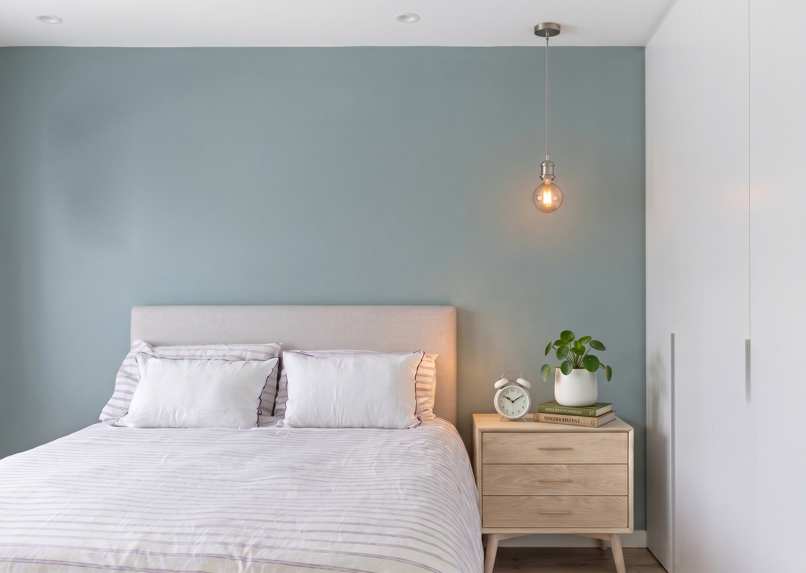
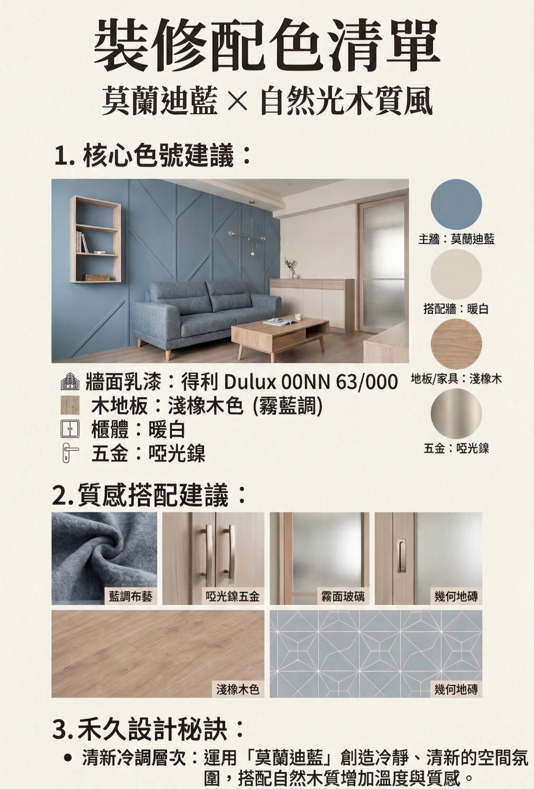
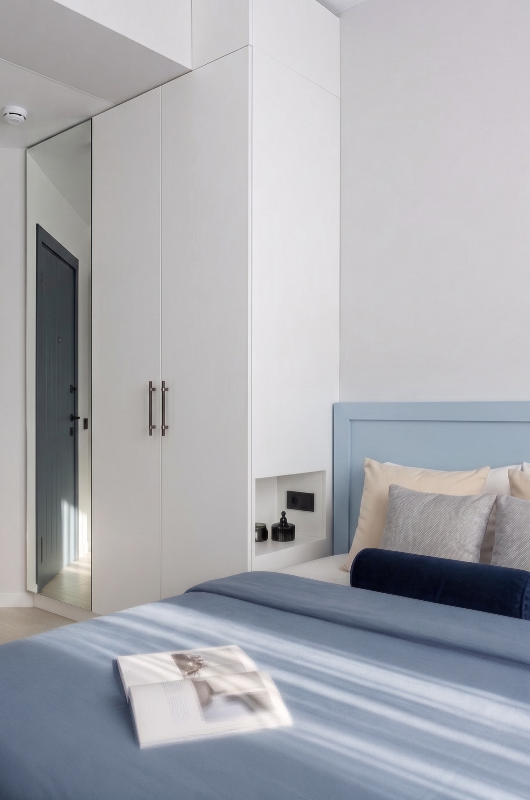
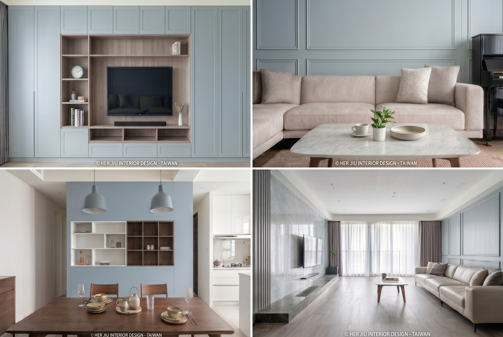
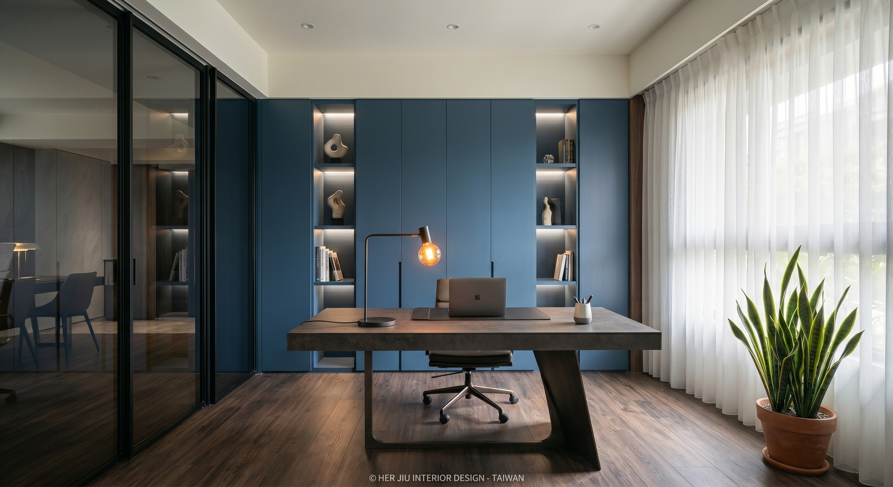
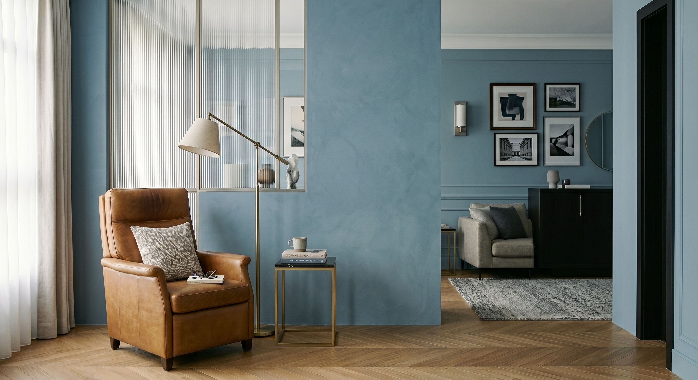
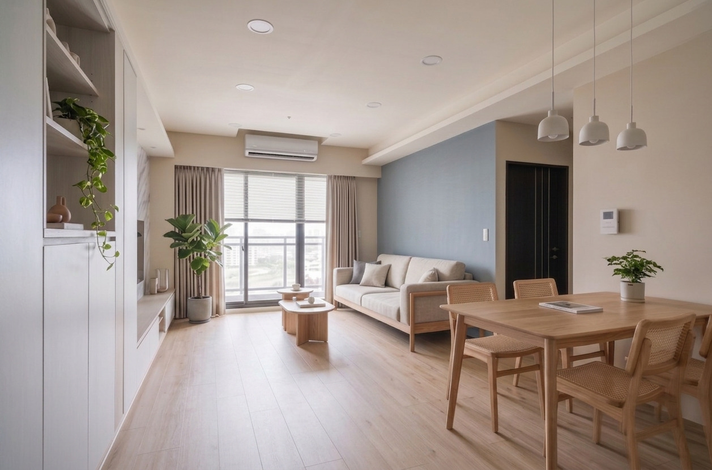

在新北市的快節奏生活中，家是心靈的港口。
我們透過「莫蘭迪藍」的低飽和灰調，賦予空間呼吸感，在沉穩與耐看之間，定義屬於現代洗鍊的美學。以下為您拆解如何運用莫蘭迪藍與自然木質，打造一個冷靜卻不冰冷的溫潤居所。
一、 空間配比：精準數據清單

針對「莫蘭迪藍」風格空間，我們建議遵循以下精準配比，以達到視覺上的冷暖平衡與質感提升：
| 項目 | 色彩/材質規格 | 設計說明 |
|---|---|---|
| 主牆面 | 得利 Dulux 0NN 63/000 (霧藍調) | 作為空間主視覺，低飽和度帶來沉穩感。 |
| 輔助牆面 | 暖白 或 珍珠白 | 透過明度差異，營造空間層次感與通透感。 |
| 地面材質 | 淺橡木色木地板 | 藉由清晰且溫潤的木質紋理，中和藍色系帶來的冷冽感，達成溫馨平衡。 |
| 五金配件 | 啞光鎳 (Satin Nickel) | 避開高反光的亮銀色，改以柔和的金屬光澤彰顯內斂與高級質感。 |

二、 設計秘訣：異材質碰撞的層次感
顏色是基底，材質是靈魂。我們透過材質與光影的交錯，打破大面積牆面的單調：
- 光影虛實： 運用「長虹玻璃」與「霧面玻璃」，藉由玻璃的透光與折射，讓藍色背景產生流動的層次。
- 材質對比： 透過織品布藝（如亞麻藍色抱枕或是床單）的細膩紋理，與平滑的牆面形成觸感對比。
- 隱藏燈光： 利用「暗藏燈帶」與「Shadow Gap（陰影縫）」處理，讓光線柔化藍色牆面，夜間呈現月光般的寧靜感。


三、 三大進階搭配方案
根據不同的生活模式與空間氛圍，我們為莫蘭迪藍量身打造了三種配方：
1. 職人書房配方（知性穩重）
搭配： 莫蘭迪藍牆 + 胡桃木櫃體 + 啞光黑五金 + 暖光閱讀燈。
適用： 適合需要高度專注、喜愛靜謐思考的空間。

2. 都會輕奢配方（精緻洗鍊）
搭配： 莫蘭迪藍牆 + 長虹玻璃屏風 + 啞光鎳把手 + 焦糖色皮革單椅。
適用： 適合追求法式優雅、現代感強的都會宅。

3. 極簡療癒配方（放鬆呼吸）
搭配： 莫蘭迪藍主牆 + 奶油杏色輔助牆 + 淺橡木地板 + 綠色植物。
適用： 適合講求 Japandi 風格、回到家便想完全放鬆的屋主。

禾久設計堅持
我們始終認為，室內設計不僅是空間的重組，更是屋主性格的延伸。
莫蘭迪藍不僅僅是一種顏色，它是我們為您的家，找到的那份「冷靜卻不冰冷」的完美平衡。